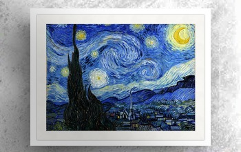
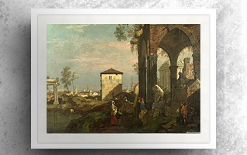

Aqui estão algumas de nossas exposições
A Noite Estrelada.
135 Anos
"A Noite Estrelada" é uma pintura de Vincent van Gogh de 1889. A obra retrata
a vista da janela de um quarto do hospício de Saint-Rémy-de-Provence, pouco antes do nascer do sol.

A Reflexão de Apolo.
122 Anos
"A Reflexão de Apolo" é uma escultura de mármore criada
pelo renomado escultor francês Alexandre Belmonte no início do século XX.
A Criação de Adão.
1513 Anos
"A Criação de Adão" é um afresco de 280 cm x 570 cm,
pintado por Michelangelo Buonarroti por volta de 1511,
que fica no teto da Capela Sistina

Os Portões de Eternidade.
201 Anos
"Os Portões de Eternidade" é uma obra de Isabella Marini de 1823,
pintora neoclássica conhecida por suas paisagens imaginativas e ruínas históricas.

The Lady of Shalott.
136 Anos
"The Lady of Shalott" (em português: A Dama de Shalott ou A Senhora de Shalott)
é uma pintura a óleo sobre tela do pintor
Pré-Rafaelita John William Waterhouse, de 1888.

Bonaparte visitando as vítimas da peste de Jafa.
220 Anos
"Bonaparte visitando as vítimas da peste de Jafa" é o título de
uma obra de Antoine-Jean Gros, datada de 1804.
Grande Esfinge de Gizé.
130 Anos
"Grande Esfinge de Gizé" (em árabe: أبو الهول; Abu al-Haul).
É geralmente considerado como uma representação do rosto do faraó Quéfren
O Crepúsculo da Batalha.
219 Anos
"O Crepúsculo da Batalha" é uma obra de Lorenzo di Campos captura o desespero
e o sacrifício de um campo de batalha durante o pôr do sol de 1805.
A Noite Estrelada.
135 Anos
"A Noite Estrelada" é uma pintura de Vincent van Gogh de 1889. A obra retrata a vista da janela de um quarto do hospício de Saint-Rémy-de-Provence, pouco antes do nascer do sol.
A Reflexão de Apolo.
122 Anos
"A Reflexão de Apolo" é uma escultura de mármore criada pelo renomado escultor francês Alexandre Belmonte no início do século XX.
A Criação de Adão.
1513 Anos
"A Criação de Adão" é um afresco de 280 cm x 570 cm, pintado por Michelangelo Buonarroti por volta de 1511, que fica no teto da Capela Sistina
Os Portões de Eternidade.
201 Anos
"Os Portões de Eternidade" é uma obra de Isabella Marini de 1823, pintora neoclássica conhecida por suas paisagens imaginativas e ruínas históricas.
The Lady of Shalott.
136 Anos
"The Lady of Shalott" (em português: A Dama de Shalott ou A Senhora de Shalott) é uma pintura a óleo sobre tela do pintor Pré-Rafaelita John William Waterhouse, de 1888.
Bonaparte visitando as vítimas da peste de Jafa.
220 Anos
"Bonaparte visitando as vítimas da peste de Jafa" é o título de uma obra de Antoine-Jean Gros, datada de 1804.
Grande Esfinge de Gizé.
130 Anos
"Grande Esfinge de Gizé" (em árabe: أبو الهول; Abu al-Haul). É geralmente considerado como uma representação do rosto do faraó Quéfren
O Crepúsculo da Batalha.
219 Anos
"O Crepúsculo da Batalha" é uma obra de Lorenzo di Campos captura o desespero e o sacrifício de um campo de batalha durante o pôr do sol de 1805.